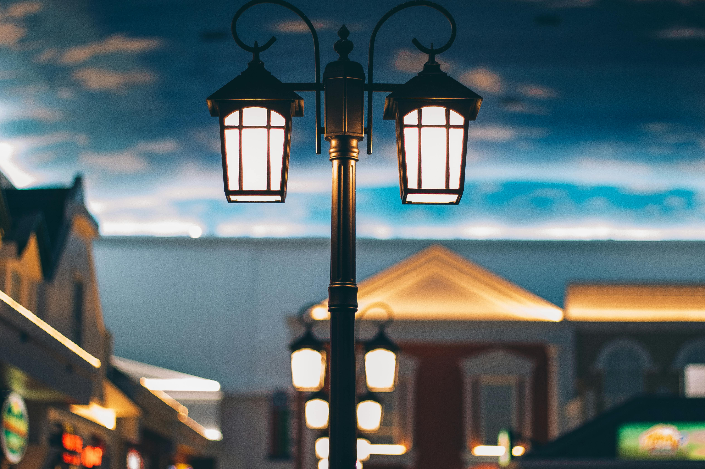
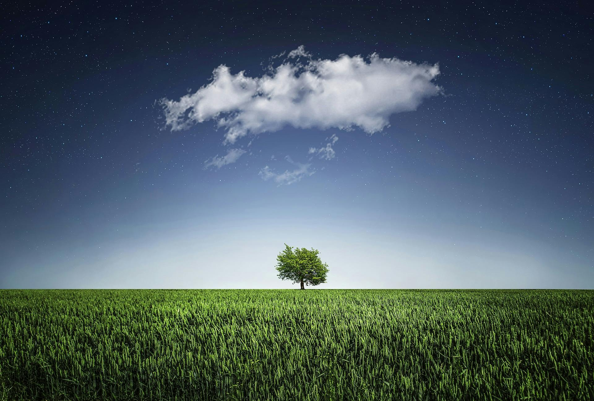

White Lamborghini Aventador ğŸï¸
Lamborghini Aventador ek aisi supercar hai jo sirf chalane ke liye nahi, balki mehsoos karne ke liye hoti hai. Iski tez katila design, safed shimmery paint aur aggressive front fascia isse sadak par sabse alag banate hain. Performance aur style ka yeh behtareen milaap har car enthusiast ka sapna hai. Jab yeh gaadi chalte hai, toh sirf awaaz nahi karti — yeh ek jazba jagati hai.
Grey Lamborghini Huracán STO ğŸï¸
Matte grey finish mein dikh raha yeh Lamborghini Huracán STO, ek race track ki taqat aur sheher ki style dono ka perfect fusion hai. Yeh car sirf ek mode of transport nahi, balki ek engineering marvel hai. Har curve, har vent aerodynamics ko samarpit hai. Yeh tasveer is baat ka saboot hai ke performance aur elegance ek saath exist kar sakte hain.
Purple Sunset Over Lake ğŸï¸
Iss khoobsurat sunset ne asmaan ko gulabi aur baingani rangon mein rang diya hai, jaise prakriti ne apna canvas khud banaya ho. Paani mein padta reflection aur peeche dikhte pahaadon ka silsila ek sukoon bhari shaam ka ahsaas deta hai. Yeh tasveer un palon ko capture karti hai jab waqt ruk jaata hai aur sirf khamoshi bolti hai.

Lone Tree in Lake with Mountains 🌄
Ek akela ped, ek shaant jheel, aur peechhe barf se dhake pahaad — yeh sab milkar ek adbhut nazara banate hain. Yeh tasveer sirf prakriti ka roop nahi, balki tanhayi mein bhi khoobsurti dikhane ka ek tareeka hai. Yeh image hume yeh yaad dilati hai ki silence bhi ek language hoti hai — ek aisi zubaan jo seedha dil tak jaati hai.
Bright Lamp Post in Urban Street at Night 🌃
Ek classic lamp post ke neeche chamakti roshni, aur piche sheher ka soft blur — yeh tasveer ek urban charm lekar aati hai. Is roshni mein ek warmth hai, ek nostalgia jise dekhkar purane zamane ki yaadein taza ho jaati hain. Yeh image sheher ki modernity mein chhupi ek simplicity aur elegance ko capture karti hai.
Lamborghini Logo
Is tasveer mein Lamborghini ka iconic logo nazar aa raha hai, jo luxury aur speed ka pratik hai. Golden bull aur black shield ka combination is brand ki aggressive design aur performance-driven soch ko darshata hai. Ye close-up shot is car ki elegance aur detailed craftsmanship ko ubharta hai.
Akela Ped Aur Khet 🌾
Yeh tasveer ek akela ped aur uske chaaron taraf harit kheton ko dikhati hai. Upar ek akela badal aur taare bhari raat ka aakash is tasveer ko aur bhi zyada poetic bana deta hai. Yeh image tanhaayi mein bhi sukoon aur khoobsurti dhundhne ki kala ko darshata hai.

Snowy Mountain Peak 🏔️
Is image mein ek barf se dhaka pahaadi shikhar dikh raha hai, jo badalon ke upar uthta hua sa lagta hai. Yeh drishya shakti, thandak aur prakriti ke raw power ka pratinidhitva karta hai. Neeche ke pehadi ilaake aur upar neela aakash is drishya ko aur bhi bhavy banate hain.
Wooden Pier & Moonlight 🌕
Chaandni raat mein ek wooden pier seedha lake ke beech tak jata hai. Pani mein chaand ka prateebimb aur aas-paas ki chhayaen is scene ko ek dreamy, shaant aur thoda sa mysterious bana deti hain. Yeh tasveer man aur vichar dono ko shaant karne wali hai.
Night City Skyline with Reflections 🌃
Raat ke samay ek sheher ka skyline dikh raha hai jahan skyscrapers ki roshni pani mein chhavi banakar ek artistic nazara paida karti hai. CN Tower jaise landmarks aur vibrant colors yeh batate hain ki yeh sheher raat mein bhi kabhi sota nahi hai. Yeh tasveer sheher ki energy aur uski khoobsurti ko ek saath capture karti hai.